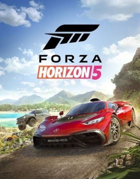

Oyun Hakkında
Tür: Yarış Simülasyonu
Çıkış Tarihi: 5 Kasım 2021
Metascore: 92
Açıklama: Forza Horizon 5 Meksika'da geçen açık dünya bir yarış oyunudur. Oyun, tüm Forza Horizon serisindeki en büyük haritaya (Forza Horizon 4'ten %50 daha büyük) ve en yüksek tepe noktasına sahiptir. Harita, yaratıcı yönetmen Mike Brown tarafından ekibin oluşturduğu en çeşitli Forza Horizon haritalarından biri olarak tanımlanmıştır. Harita, aktif bir kaldera yanardağı, ormanlar ve plajlar, antik Maya tapınakları ve Guanajuato gibi şehirleri içerir. Oyuncular açık dünyayı özgürce keşfedebilir, çok oyunculu yarışlarda rekabet edebilir ve hikâye modunu oynayabilirler. Hem oyunda yer alan arabalar hem de oyuncu karakterleri detaylı bir şekilde özelleştirilebilmektedir. Oyun, seride arabalarda ışın izlemeyi destekleyen ilk oyundur. (Işın izleme yalnızca ForzaVista'da mevcuttur) Oyun, oyuncuların gözle görülür bir fırtına görebilecekleri yeni bir hava durumu sistemi (yerel hava durumu) sunmaktadır. Meksika, geniş bir rakım aralığına sahip çok geniş bir ülke olduğundan, oyunda aynı anda birden fazla iklim ortaya çıkacaktır. Dört mevsim halen mevcut ancak haritanın dört bir köşesinde farklı etkileri olacak. Örneğin, kurak mevsimde toz fırtınaları ortaya çıkarken, tropik fırtınalar sonbahar mevsimi boyunca meydana gelecek. Bir başka detay da ormanda olacak, ortamın artık havaya tepki verecek. Mesela her yerde yapraklar uçuşacak. Forza Horizon 5, Playground Games tarafından geliştirilen ve Xbox Game Studios tarafından yayınlanan bir yarış oyunudur. Forza serisindeki beşinci Forza Horizon oyunu ve on ikinci Forza oyunu olacaktır. Oyun, Meksika'nın kurgusal bir temsilinde geçmektedir. 9 Kasım 2021'de Microsoft Windows, Xbox One ve Xbox Series X ve S için piyasaya sürüldü.
Ekran Görüntüleri
